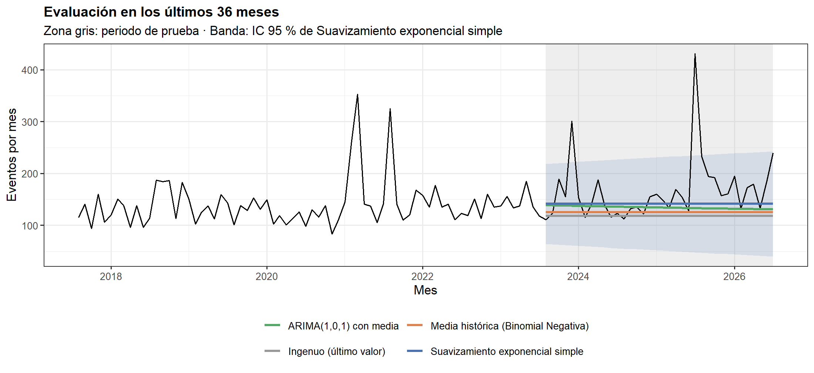
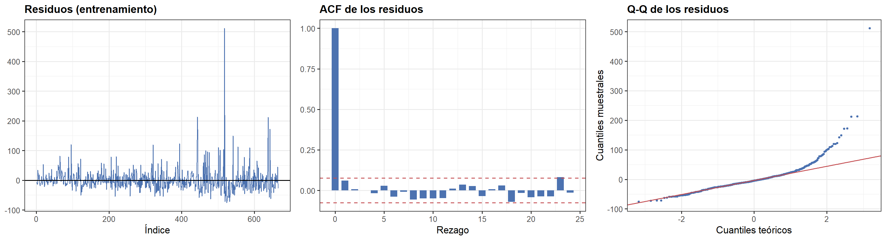

10 10. Modelos de series de tiempo para el conteo mensual
10.0.1 10.1 Métodos seleccionados y justificación
- Variable modelada: número de eventos por mes. Es la resolución más fina con pocos meses vacíos; la magnitud y la energía no se pronostican porque dependen de eventos individuales.
- Sin regresión: la información está en la historia de la serie (autocorrelación), por lo que se usan modelos de series de tiempo.
- Referencias obligatorias: Ingenuo (repite el último mes) y Media histórica con intervalos de una Binomial Negativa (los conteos están sobredispersos, por lo que Poisson subestimaría la incertidumbre).
- Suavizamiento exponencial simple: pondera más los meses recientes; adecuado para un nivel que cambia lentamente, sin tendencia ni estacionalidad marcadas.
- ARIMA(1,0,1) con media: recoge la autocorrelación de corto plazo de la ACF/PACF. Supone estacionariedad alrededor de la media; si las pruebas indican cambios de nivel, sus intervalos pueden ser optimistas.
- No se usó SARIMA: si la estacionalidad anual es débil (sección 9.7), un término estacional añadiría parámetros sin justificación.
- Validación temporal: los últimos
N_PRUEBAmeses son el conjunto de prueba (nunca una división aleatoria). Métricas: MAE, RMSE y MASE (MASE < 1 = mejor que el ingenuo de un paso dentro del entrenamiento), más la cobertura del intervalo de 95 %.
ETIQ <- c(naive = "Ingenuo (último valor)",
media_nb = "Media histórica (Binomial Negativa)",
ses = "Suavizamiento exponencial simple",
arima = "ARIMA(1,0,1) con media")
# Ajusta el modelo sobre y y pronostica h pasos: devuelve media, límite inf., límite sup. y residuos
ajustar_pronosticar <- function(clave, y, h, nivel = 0.95) {
y <- as.numeric(y)
z <- qnorm(0.5 + nivel / 2)
pasos <- seq_len(h)
if (clave == "naive") {
resid <- diff(y)
media <- rep(y[length(y)], h)
se <- sd(resid) * sqrt(pasos)
} else if (clave == "media_nb") {
mu <- mean(y); v <- var(y)
resid <- y - mu
q <- c((1 - nivel) / 2, 1 - (1 - nivel) / 2)
if (v > mu) { # Binomial Negativa por momentos
k <- mu^2 / (v - mu)
lims <- qnbinom(q, size = k, mu = mu)
} else { # sin sobredispersión: Poisson
lims <- qpois(q, mu)
}
return(list(media = rep(mu, h), lo = rep(lims[1], h), hi = rep(lims[2], h), resid = resid))
} else if (clave == "ses") {
fit <- HoltWinters(ts(y), beta = FALSE, gamma = FALSE)
a <- fit$alpha
resid <- y[-1] - as.numeric(fit$fitted[, "xhat"])
media <- rep(as.numeric(predict(fit, n.ahead = 1)), h)
se <- sd(resid) * sqrt(1 + (pasos - 1) * a^2)
} else if (clave == "arima") {
fit <- arima(y, order = c(1, 0, 1), include.mean = TRUE)
pr <- predict(fit, n.ahead = h)
media <- as.numeric(pr$pred); se <- as.numeric(pr$se)
resid <- as.numeric(residuals(fit))
}
list(media = media, lo = pmax(media - z * se, 0), hi = media + z * se, resid = resid)
}
metricas <- function(real, p, escala) {
e <- real - p$media
tibble(MAE = mean(abs(e)), RMSE = sqrt(mean(e^2)), MASE = mean(abs(e)) / escala,
`Cobertura IC95 (%)` = mean(real >= p$lo & real <= p$hi) * 100)
}
n_tot <- length(n_m)
y_tr <- n_m[seq_len(n_tot - N_PRUEBA)]
y_te <- n_m[(n_tot - N_PRUEBA + 1):n_tot]
per_tr <- serie_m$per[seq_len(n_tot - N_PRUEBA)]
per_te <- serie_m$per[(n_tot - N_PRUEBA + 1):n_tot]
escala <- mean(abs(diff(y_tr)))
pred_te <- map(names(ETIQ), ~ ajustar_pronosticar(.x, y_tr, N_PRUEBA)) %>% set_names(names(ETIQ))
tab_mod <- map_dfr(names(ETIQ), ~ bind_cols(tibble(Modelo = ETIQ[[.x]]), metricas(y_te, pred_te[[.x]], escala)))
kab(tab_mod, digits = 3)| Modelo | MAE | RMSE | MASE | Cobertura IC95 (%) |
|---|---|---|---|---|
| Ingenuo (último valor) | 49.917 | 77.151 | 1.663 | 100.000 |
| Media histórica (Binomial Negativa) | 44.874 | 72.926 | 1.495 | 91.667 |
| Suavizamiento exponencial simple | 38.047 | 64.962 | 1.267 | 94.444 |
| ARIMA(1,0,1) con media | 40.467 | 68.480 | 1.348 | 88.889 |
Entrenamiento: 1968-01 → 2023-07 (667 meses) | Prueba: 2023-08 → 2026-07 (36 meses).
Menor error en el periodo de prueba: Suavizamiento exponencial simple (MASE = 1.267). Ningún modelo supera al ingenuo de un paso (MASE > 1): las secuencias de réplicas no se pueden anticipar.
cols <- c("Ingenuo (último valor)" = "#999999", "Media histórica (Binomial Negativa)" = NARANJA,
"Suavizamiento exponencial simple" = AZUL, "ARIMA(1,0,1) con media" = VERDE)
d_pred <- map_dfr(names(ETIQ), ~ tibble(per = per_te, modelo = ETIQ[[.x]], pred = pred_te[[.x]]$media))
d_obs <- tibble(per = c(tail(per_tr, 72), per_te), y = c(tail(y_tr, 72), y_te))
d_ic <- tibble(per = per_te, lo = pred_te[[MEJOR]]$lo, hi = pred_te[[MEJOR]]$hi)
ggplot() +
annotate("rect", xmin = min(per_te), xmax = max(per_te), ymin = -Inf, ymax = Inf, fill = GRIS, alpha = 0.25) +
geom_ribbon(data = d_ic, aes(per, ymin = lo, ymax = hi), fill = cols[[ETIQ[[MEJOR]]]], alpha = 0.15) +
geom_line(data = d_obs, aes(per, y), color = "black", linewidth = 0.6) +
geom_line(data = d_pred, aes(per, pred, color = modelo), linewidth = 1) +
scale_color_manual(values = cols, name = NULL) +
guides(color = guide_legend(nrow = 2)) +
labs(title = paste0("Evaluación en los últimos ", N_PRUEBA, " meses"),
subtitle = paste0("Zona gris: periodo de prueba · Banda: IC 95 % de ", ETIQ[[MEJOR]]),
x = "Mes", y = "Eventos por mes")
10.0.2 10.2 Diagnóstico de residuos del mejor modelo
Un modelo bien especificado deja residuos sin autocorrelación (ruido blanco). Se aplica Ljung–Box (12 rezagos, sobre los residuos del entrenamiento, sin corrección de grados de libertad): p < 0.05 indica autocorrelación sin explicar. Se complementa con la ACF de los residuos y su normalidad (Q-Q). Limitación: la normalidad de los residuos es poco plausible en conteos con colas pesadas, de modo que los intervalos normales son aproximados.
rs <- pred_te[[MEJOR]]$resid
lb_r <- Box.test(rs, lag = 12, type = "Ljung-Box")
p1 <- ggplot(tibble(i = seq_along(rs), r = rs), aes(i, r)) +
geom_line(color = AZUL, linewidth = 0.4) + geom_hline(yintercept = 0) +
labs(title = "Residuos (entrenamiento)", x = "Índice", y = NULL)
ar <- as.numeric(acf(rs, lag.max = 24, plot = FALSE)$acf)
b <- 1.96 / sqrt(length(rs))
p2 <- ggplot(tibble(k = 0:24, a = ar), aes(k, a)) + geom_col(fill = AZUL, width = 0.7) +
geom_hline(yintercept = c(-b, b), color = ROJO, linetype = "dashed") +
labs(title = "ACF de los residuos", x = "Rezago", y = NULL)
p3 <- ggplot(tibble(r = rs), aes(sample = r)) + stat_qq(color = AZUL, size = 0.8) + stat_qq_line(color = ROJO) +
labs(title = "Q-Q de los residuos", x = "Cuantiles teóricos", y = "Cuantiles muestrales")
gridExtra::grid.arrange(p1, p2, p3, ncol = 3)
Modelo: Suavizamiento exponencial simple. Ljung–Box (12 rezagos): p = 5.06e-01 ≥ 0.05 → NO se rechaza residuos = ruido blanco